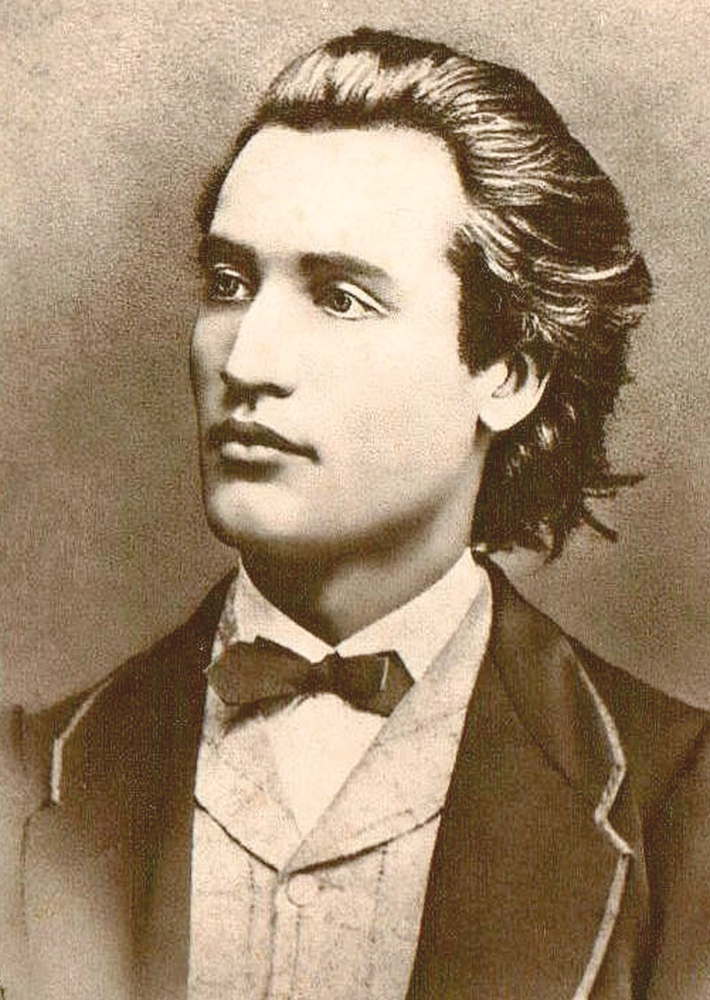
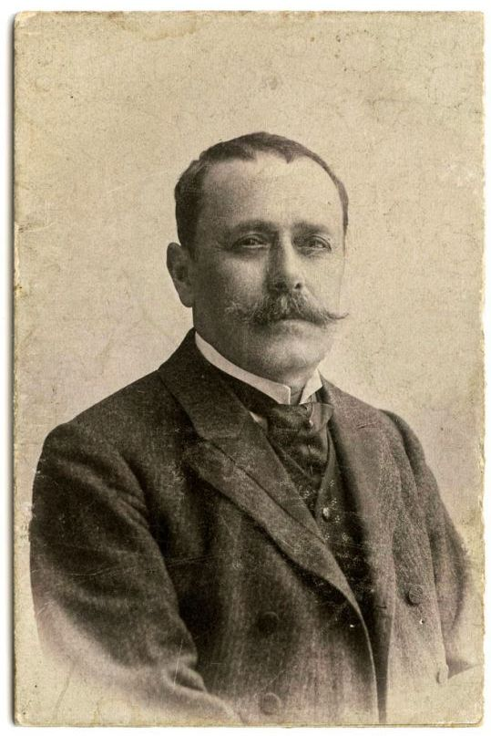
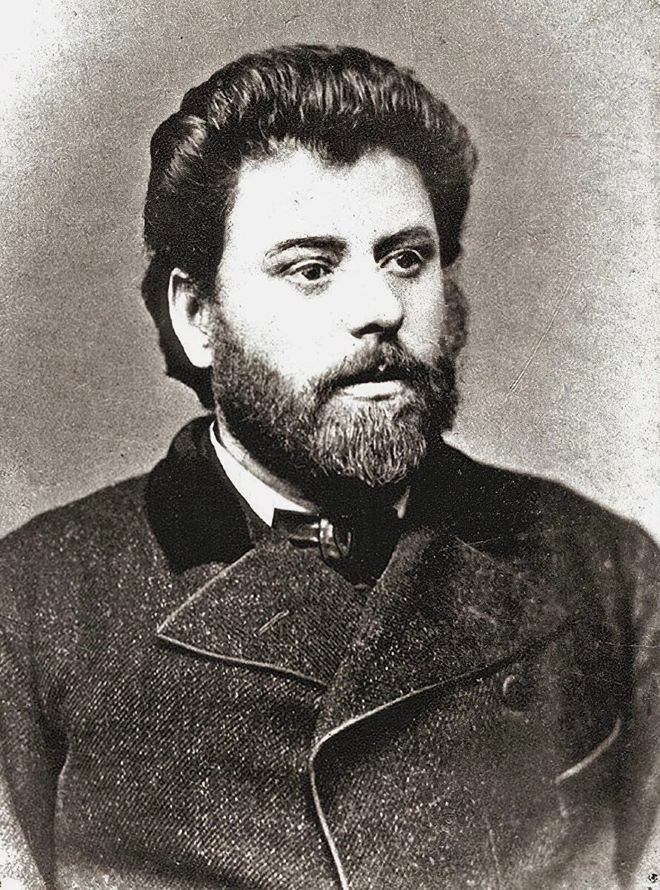

Poet național al României.
Operă: Luceafărul
Literatura română reprezintă o parte importantă a culturii naționale, prin operele și autorii care au contribuit la dezvoltarea limbii române.

Poet național al României.
Operă: Luceafărul

Dramaturg și prozator român.
Operă: O scrisoare pierdută

Autor de povești și povestiri.
Operă: Amintiri din copilărie